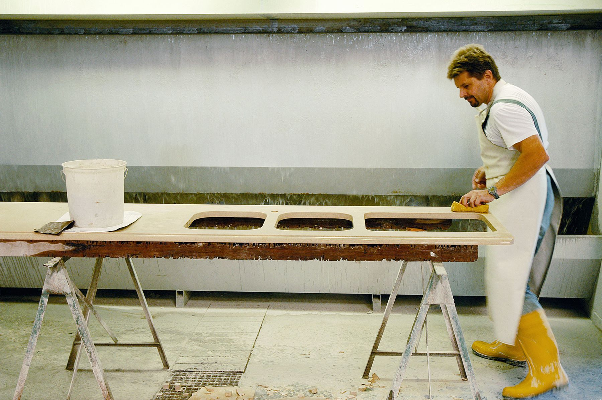
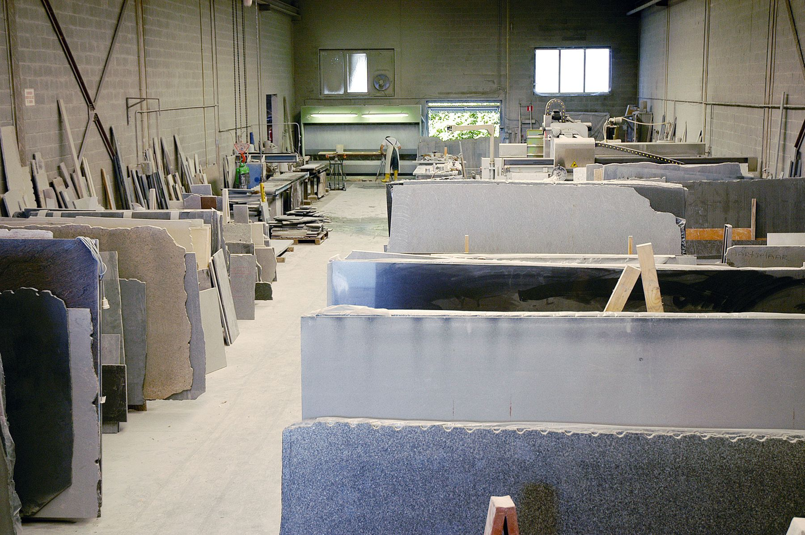
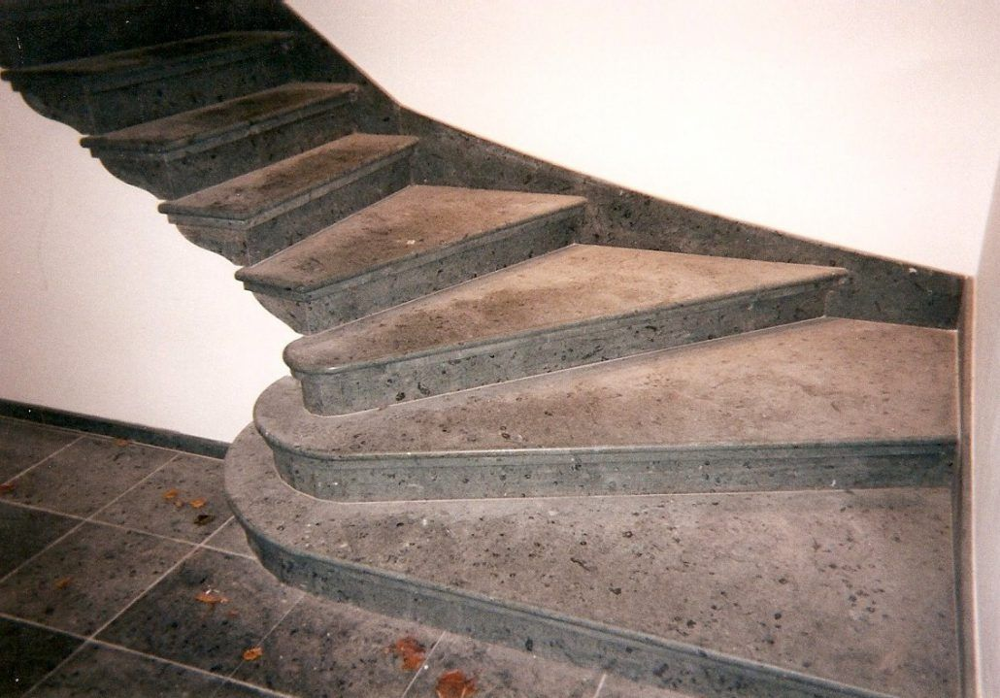
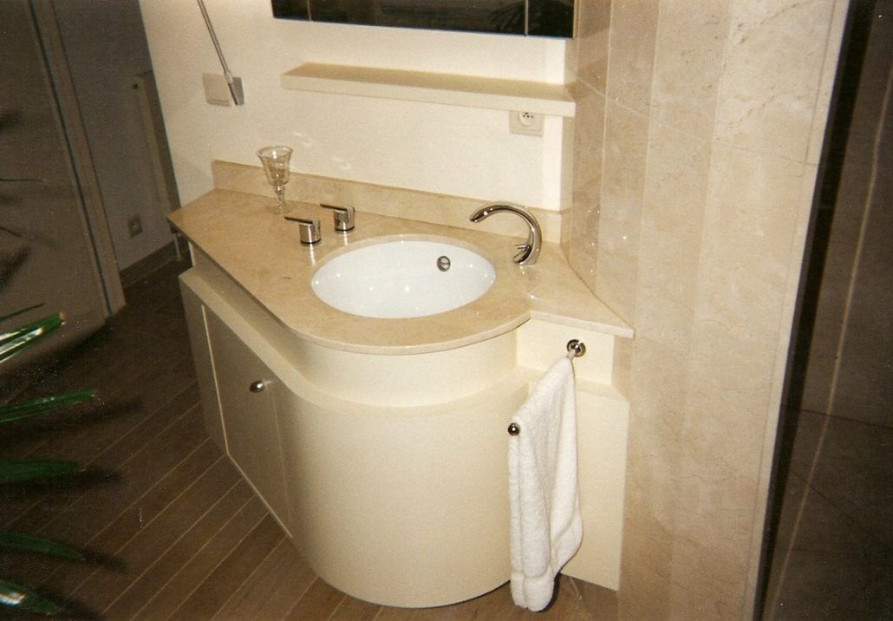
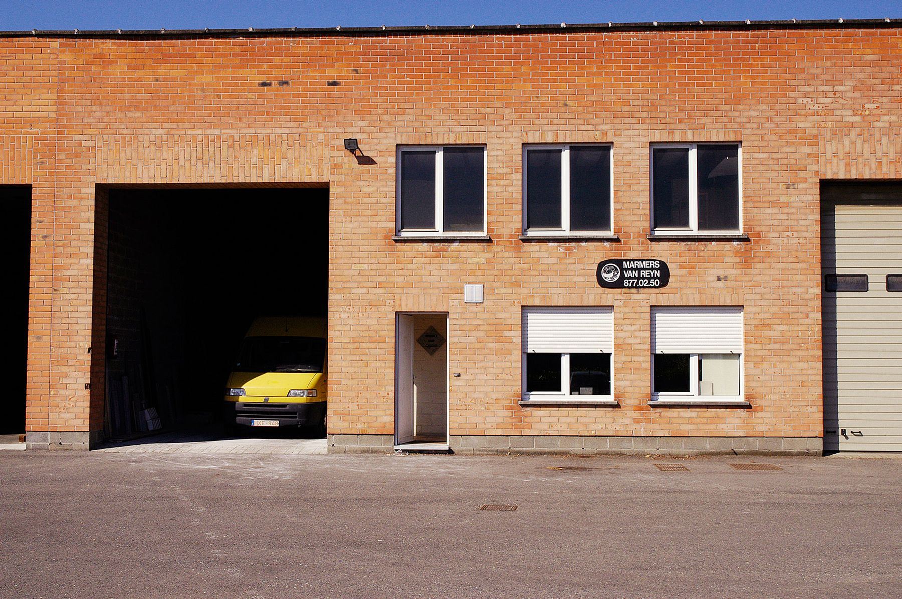

Graniet
Onze specialiteit voor keukenwerkbladen: hard, hittebestendig en krasvast.

Granieten werkbladen en maatwerk in natuursteen, uit eigen atelier in Aartselaar.
Marmer, graniet, arduin en composiet. Voor particulieren en aannemers. Niets in serie, alles op maat, en op korte termijn gepland.
Sinds 1910, begonnen in Wilrijk
Eigen atelier met stofafzuiging en rolbrug
Antwerpen, Vlaams-Brabant en Oost-Vlaanderen
Alles kan gemaakt worden binnen de toleranties die de natuur aan elke steensoort meegaf. Onze specialiteit zijn granieten keukenwerkbladen, maar ook trappen, dorpels, vensterbanken en badmeubels komen uit ons atelier.
Onze specialiteit voor keukenwerkbladen: hard, hittebestendig en krasvast.
Strak en egaal van kleur, ideaal voor moderne keukens en badkamers.
Voor badmeubels, vensterbanken en tafels waar de tekening van de steen spreekt.
Belgische blauwe steen voor dorpels, trappen en buitenwerk.
Kies steen, vorm, maten en uitsparingen. De tekening past zich meteen aan. Wij bekijken je aanvraag en sturen een prijs op maat, zonder dat je eerst moet langskomen.
Bedankt, je aanvraag is genoteerd.
Dit is een concept-demo: er werd niets verzonden. Op de echte site komt de aanvraag met tekening en bijlagen meteen bij info@marmersvanreyn.be binnen.
Marmers Van Reyn ontstond in 1910 in het hartje van Wilrijk, zoals de meeste steenkappers naast het kerkhof, als zerkenmaker. Van werken onder een golfplaten afdak groeiden we naar een atelier met stofafzuiging en rolbrug, vandaag in Aartselaar.
Bij ons wordt niets in serie gemaakt om te stockeren. Elke bestelling wordt grondig opgevolgd en op korte termijn gepland.



1910
Start als zerkenmaker in Wilrijk
Atelier
Stofafzuiging en rolbrug voor grote platen
Vandaag
Werkbladen en maatwerk voor particulieren en aannemers
Al sinds 1910 verzorgen we de natuursteen voor particulieren en aannemers in de provincies Antwerpen, Vlaams-Brabant en Oost-Vlaanderen. Op zaterdag ontvangen we je op afspraak.
